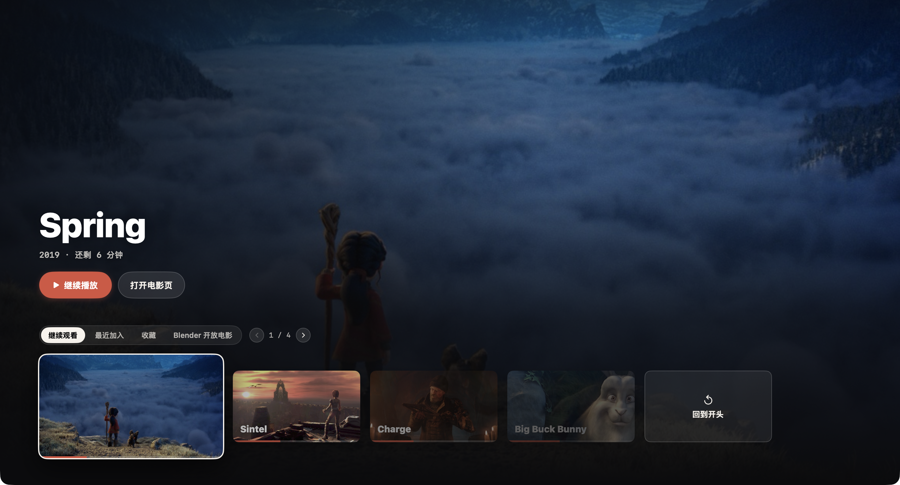
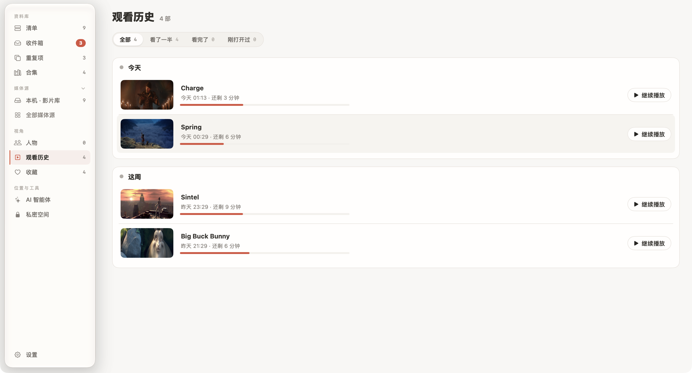
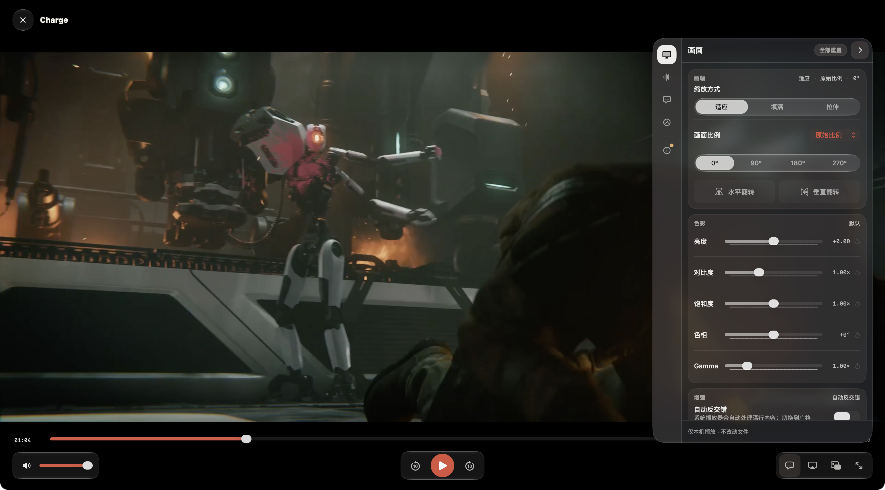
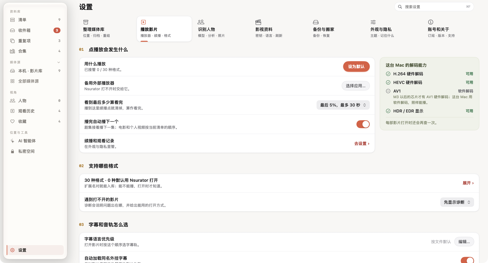

整理是为了更方便地看。平时直接进入「放映」，找回上次没有看完的影片；需要调整画面或观看习惯时，再进入播放器和设置页。
- 找到继续观看入口
- 理解进度与看完的关系
- 按需要调整画面和连播
用“放映”找回正在看的电影
点击窗口顶部的「放映」，或使用 ⌘ 1 切换。首页会根据资料库和观看情况呈现影片；看了一部分的内容可以从「继续观看」接着播放。想整理文件，再切回「工作台」即可。

电影详情页也有续播入口。像《Sintel》这样的影片，按钮可以显示上次的播放位置，让你在打开播放器前就知道会从哪里开始。需要查找更早看过的内容时，打开工作台侧栏的「观看历史」。

如果发现没有续播记录，先去「设置 → 外观与隐私」查看观看记录相关设置。关闭记录后，新的播放进度不会继续保存；清除已有记录也会影响续播。不要把这个开关误认为播放器是否能打开文件的开关。
先掌握播放器里最常用的几个位置
底部中间是播放与暂停，旁边是前后跳转；进度条用来定位片段，左下方调整音量。右侧工具栏提供截图等操作，右下方集中放置字幕、音轨及窗口相关入口。
开始播放后，可以先选择合适的音轨和字幕，再进入沉浸观看。如果只是想回看一句对白，使用前后跳转比拖动整条进度条更容易控制。
画面不合适时，先检查比例
打开播放器的设置面板，进入「画面」。画幅比例会影响视频如何占据窗口；带上下黑边的电影不一定有问题，很多影片本来就采用更宽的画幅。

先按影片原有比例观看。只有在明确需要填满屏幕时，再尝试其他显示方式，并留意人物是否被拉伸、画面边缘是否被裁掉。色彩选项也建议在观看真实场景时逐项调整，不要只依据一张海报判断。
屏幕、芯片和影片编码共同影响播放效果。同一部电影在不同 Mac 上的硬件解码或 HDR 表现可能不同，可在「设置 → 播放影片」查看这台 Mac 的能力提示。
把自动连播和“算看完”的规则设好
在「设置 → 播放影片」中，可以设置看到最后多少算看完。进入这个范围后，影片会被视为已经完成，续播点会清掉。已经看完却仍留在继续观看中，或片尾还没结束就不再显示续播时，都可以来检查这项设置。

「播完自动播下一个」开启后，剧集会继续下一集，电影和个人视频按当前清单顺序接着播放。准备一次看几部短片时可以开启；只想看一部就休息时，可以关掉。
文件打不开时，先看诊断说明，再决定是否尝试备用外部播放器。设置页列出的文件扩展名表示可以收进资料库，并不保证每个文件里的编码和内容都能正常播放。
步骤与界面依据 2026 年 9 月的本地版本核对。部分收藏与续播进度为演示数据，图片来源见素材署名。